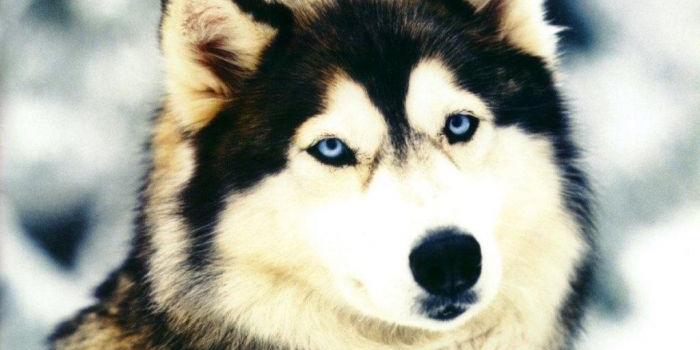
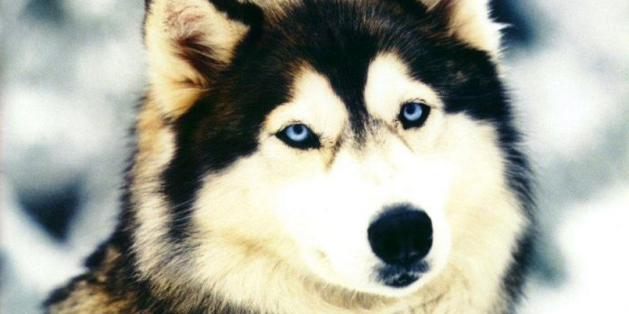

Сибирский хаски — была выведена в Сибири племенами чукчей около четырех тысяч лет назад как ездовая собака" />
Сибирский хаски — была выведена в Сибири племенами чукчей около четырех тысяч лет назад как ездовая собака" />


Гельминтозы плотоядных и человека, вызываемые лентецами Pseudophyllidae рода Diphyllobothrium сем. Diphyllobothriidae . Наиболее распространен Diphyllobothrium latum — членистая цестода, белого цвета, длиной от 50 см до 10 м, шириной 0,5—1,5 см.
Дефинитивные хозяева — человек, собака, кошка; первый промежуточный хозяин — рачок-циклоп; а второй — рыбы.
Яйца выделяются во внешнюю среду с фекалиями дефинитивных хозяев и попадают в воду, где из яйца через 3—5 недель выходит личин-ка-корацидий. В дальнейшем корацидиев заглатывают промежуточные хозяева, в кишечнике которых корацидии в течение 2—3 недель развиваются в процеркоидов.
Затем рачков заглатывают рыбы и процеркоиды формируются в плероцеркоид.
Эпизоотология. Течение и симптомыБольные звери угнетены, резко отстают в росте и развитии, отмечают извращение аппетита, рвоту.
Патолого-анатомические изменения. Разрастание соединительной ткани между пучками мышечных волокон.
Постановка диагнозаДиагноз основывается на гельминтокопрологических исследованиях.
Яйца цестоды овальной формы, на одном из полюсов имеется крышечка, а на противоположном — выступ в виде шипика. Размер яиц 0,069- 0,071 мм длины и 0,042- 0,045 мм ширины.
Профилактика и лечениеЛечение: используют противоцистотодозные антигельминтики..
Профилактика и меры борьбы: варка, вакуумная сушка.
Промораживание и посол рыбы. В неблагополучных хозяйствах собак дегельминтизируют 4 раза в год, лисиц и песцов — за 3—4 недели до гона.
Проводят сбор и обеззараживание фекалий.
Ветеринарно-санитарная экспертиза. Рыбу, пораженную плероцерко-идами ленцов, проваривают не менее 30 мин или используют для приготовления консервов. Такую рыбу можно обеззараживать замораживанием при температуре минус 18°С в течение 48 часов или при минус 12°С не менее 6 суток, а также крепким или средним посолом в течение 14 суток. Сильно пораженную плероцеркоидом лентеца широкого рыбу направляют на техническую утилизацию. Личинок лентецов в икре обеззараживают следующими методами.
Теплый посол (15—1бС) проводят при следующем количестве соли, в процентах к массе икры: 12% —30 мин; 10% — 1 час; 8%—2 часа; 6% — 6 часов.
Охлажденный посол (5—6°С) проводят при тех же количествах соли, но вдвое дольше.
При наличии в рыбной продукции погибших и неопасных для здоровья гельминтов в количестве на 1 кг продукции:
— крупные цестоды — 0,3;
— крупные мешкообразные образования — 0,3;
— мелкие нематоды, личинки, прочие — 1, при 4%-ной зараженности допускается к реализации без ограничений. Если их количество равно или превышает указанные показатели, то продукцию направляют на утилизацию. Условно годную продукцию обеззараживают с применением смешанного крепкого и среднего посола с достижением массовой доли соли в мясе рыбы 14%.
Рыбу обеззараживают замораживанием при температуре — 40°С в течение 7 часов; -35°С — 14 часов; -28°С — 32 ч.
Надежный способ обеззараживания — термическая обработка при температуре 45—60°С из сырья, не подвергнутого предварительному замораживанию.